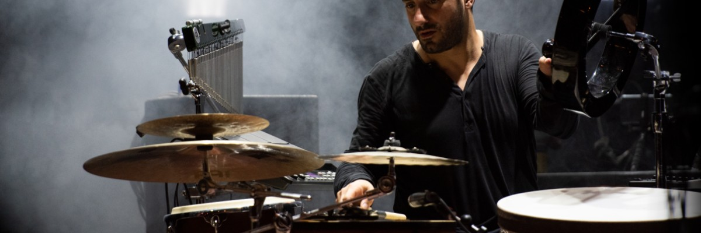

Gewinner des Frame Drum Award 2018...
Er spielte mit Künstlern wie Cyminolocy, Murat Coskun und dem Orientaljazz-Ensemble FisFüz. Auch mit der Band Macase aus Kamerun teilte er sich die Bühne. 2018 gewann er den Frame Drum Award beim Tamburi Mundi Festival, wo er sein Soloprogramm präsentierte und mit Künstlern wie Zohar Fresco oder Andrea Piccioni zusammenspielte.

... musikalischer Leiter im National Theater Mannheim
Einer seiner Stärken ist die Vielseitigkeit. Neben seinen Projekte ist er u.a. als musikalischer Leiter tätig, wie z.B. am National Theater Mannheim (NTM)für die Produktion "Istanbul" . Als Composer und Producer, schrieb er 2015 die Musik für den Dokumentar Film „Die neuen Deutschen“. Ansonsten schreibt er sowohl für seine Bands als auch für andere Künstler.

Mulltiperkussionist
Santino Scavelli ist nicht nur in unterschiedlichen Worldjazz Formationen zu hören, er spielt auch in Fusion Projekten sowie Pop- und Elektro-Bands. Je nach Bedarf der Besetzung wechselt er vom Schlagzeug zu Latin Perkussion. Am liebsten erfindet er seine eigenen Perkussion Setups, die er sich kreativ zusammenstellt und so einen einzigartigen Sound und eine eigene Spielweise schaffen kann..

Eine Brücke zwischen den Kulturen
Eines seiner Ziele ist es die unterschiedlichen Kulturen zusammen zu führen. Er kombiniert Spielweisen oder Rhythmen aus aller Welt, er zerlegt sie um sie dann neu zu erfinden und zu variieren. Elektronik und Sounds, die er entweder Live auf der Bühne verarbeitet oder im Studio vorproduziert, lässt Santino ebenfalls in sein Spiel mit einfließen.